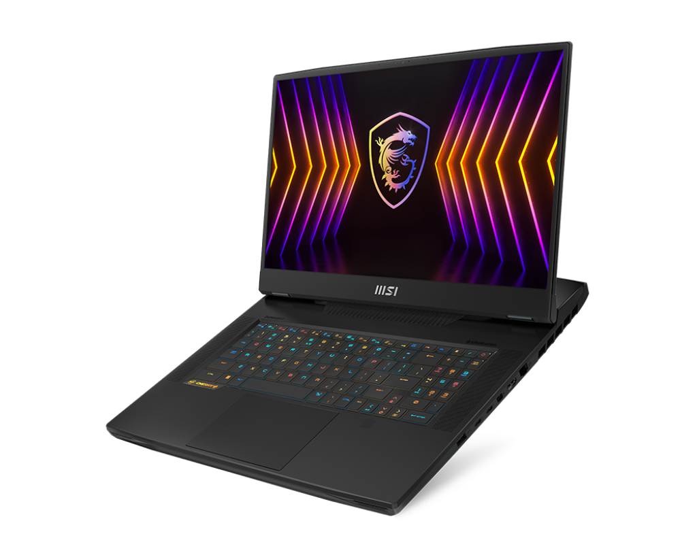

MSI titan GT77 12UHS-288ID adalah laptop gaming kelas atas yang dirancang untuk memberikan performa terbaik bagi para gamer dan profesional kreatif. Ditenagai oleh prosesor Intel Core i9 generasi ke-12 dan kartu grafis NVIDIA GeForce RTX 3080 Ti, laptop ini mampu menangani tugas-tugas berat seperti gaming AAA, rendering video, dan desain grafis dengan mudah. Dengan layar 17,3 inci beresolusi 4K UHD dan refresh rate 120Hz, pengguna dapat menikmati visual yang tajam dan mulus. Selain itu, laptop ini dilengkapi dengan sistem pendingin canggih, keyboard mekanik RGB, dan berbagai port konektivitas untuk mendukung kebutuhan pengguna yang beragam dalam satu paket yang komprehensif.
Pelajari lebih lanjut